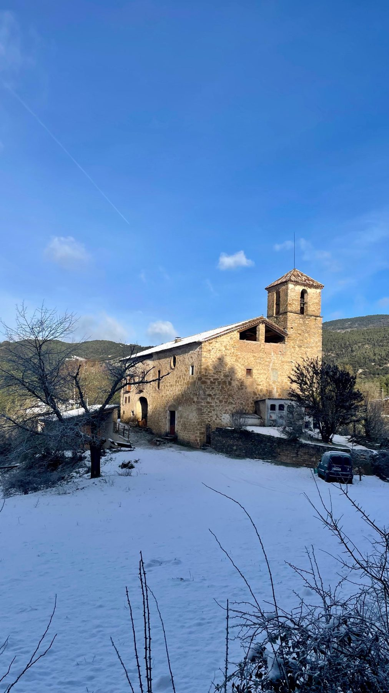
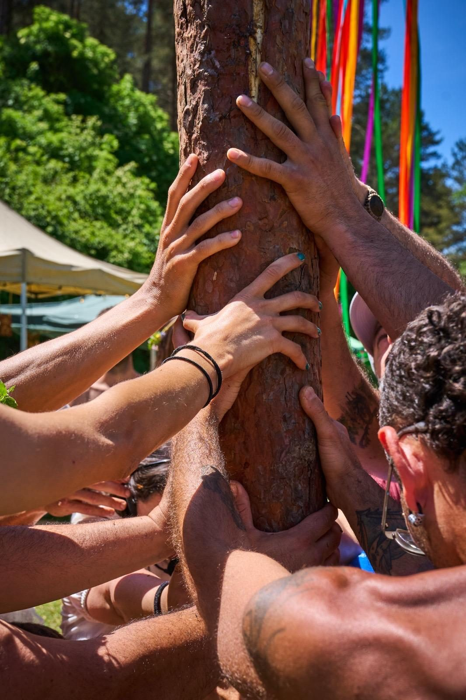

≈ 25

Zona repoblada per Guifré el Pelós · font: elgatsaberut.com
≈ 35

Catedral de la Seu d'Urgell, seu del bisbe Galderic
≈ 45
L'església parroquial de Sant Iscle i Santa Victòria
≈ 60

Els comtats catalans i el vescomtat de Cardona (s. VIII–XII) · Wikimedia (CC0)
≈ 350

Laudes romàniques encastades a la façana barroca · 1919, J. Salvany
≈ 300

Llinars de l'Aiguadora, 1919 · J. Salvany
≈ 165
L'hivern a la vall, després de l'èxode

≈ 150
